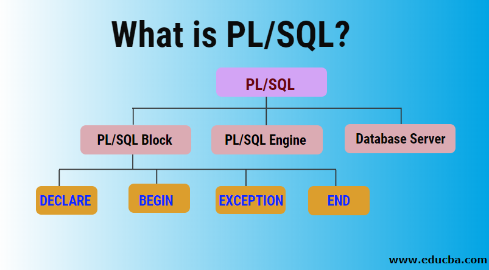

PL/SQL
PL/SQL (Procedural Language for SQL) is Oracle Corporation's procedural extension for SQL and the Oracle relational database. PL/SQL is available in Oracle Database (since version 6 - stored PL/SQL procedures/functions/packages/triggers since version 7), TimesTen in-memory database (since version 11.2.1), and IBM Db2 (since version 9.7). Oracle Corporation usually extends PL/SQL functionality with each successive release of the Oracle Database.
PL/SQL Anonymous block
DECLARE
-- this section is optional
number1 NUMBER(2);
number2 number1%TYPE := 17; -- value default
text1 VARCHAR2(12) := ' Hello world ';
text2 DATE := SYSDATE; -- current date and time
BEGIN
-- this section is mandatory, must contain at least one executable statement
SELECT street_number
INTO number1
FROM address
WHERE name = 'INU';
EXCEPTION
-- this section is optional
WHEN OTHERS THEN
DBMS_OUTPUT.PUT_LINE('Error Code is ' || TO_CHAR(sqlcode));
DBMS_OUTPUT.PUT_LINE('Error Message is ' || sqlerrm);
END;